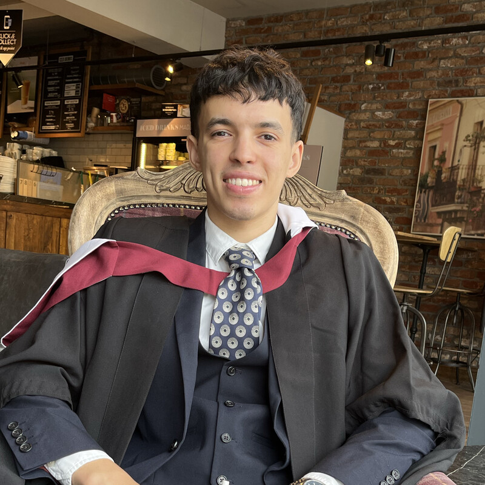

Mounir Habelhames

Personal profile
A hard-working, diligent computer science graduate with 1.5 years'
commercial experience with software development with over 6 years with
programming, alongside exceptional numerical and problem-solving skills
that have allowed me to seamlessly integrate into the industry. Currently
looking for a role in software development, ready to help teams achieve
company goals.
Education
-
University of Bristol
- MEng Computer science (2:1)
- OCT 2017 - MAY 2021
-
CLF Post 16
- Mathematics (A)
- Further Mathematics (A)
- Computer Science (A)
- SEP 2015 - JUN 2017
Work experience
-
Junior software developer
- Sapiens
- AUG 2021 - CURRENT
-
Use declarative rule-based development platform eMerge to support
development of insurance solution management software used by LV
called Lifelite.
-
Acclimatised to creating innovative solutions to bugs, both front
and back end, that are reported by users, alongside introducing
novel functionality into the system. Managed by agile development
methodology, proved successful in working within tight deadlines
and producing excellent results as part of a team.
-
Primarily used oracle SQL to work on and manage databases and XML
for storage of related data, subsequently also using both for
rigorous testing to ensure the highest quality product is
delivered. Also maintaining batch jobs in Unix using shell.
-
IT Consultant
- AMF steel design
- SEP 2017 - AUG 2021
-
Prepared documentation and training manuals for users and other
consultants
-
Set-up IT systems and equipment, offering further support and
guidance when needed.
-
Directed timely configuration of hardware for updates, repairs and
maintenance.
Skills
-
Proficient experience in SQL, XML and Linux from working in the
financial services industry. In particular, both non-relational and
relational databases (NoSQL) such as DB1 and oracle respectively.
-
Very skilled in: C, C#, Python, Java, CSS, HTML, Javascript, C++, Batch
-
Experience with cloud application development using (AWS), created an
autoscaling python software using Kubernetes to maintain docker
containers.
-
Efficient in working in an agile development team using tools such as
Jira, Confluence and Github to manage the development within the
lifecycle.
-
Implemented an autonomous embedded system on a robot that worked in
unpredictable environments effectively in C++ using Arduino, used my
comprehension of AI systems learned throughout university.
-
A vast breadth of theoretical technical knowledge related to data
structures, algorithms and many of the programming models, with
particular expertise in object oriented and declarative programming, all
reflected in my excellent 2:1 university grade.
-
Substantial customer service experience, resulting in well developed
communication and team work capabilities, complementing my technical
skills.
-
Ability in 3D asset creation and physics detailing in unity; game state
and statistics using Unity analytics and database integration into Unity
using the NoSQL cloud database, Firestore; integrating VR technologies
using neuron perception kinematic suits; online multiplayer involvement
using photon unity networking.
Hobbies
Contact me